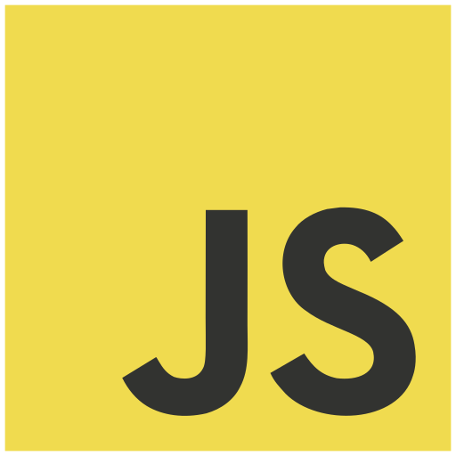

Começo
Meu primeiro contato com progamacao foi em 12/2021. Mas oque me atraiu para essa área foi os bots, bots para discord.
Projetos
Já participei de projetos escolares, Onde desenvovi sites e blogs. fiz parte de uma equipe, para criar um bot do discord. E agora participo de uma startup de progamadores.
Meus projetos
Neste blog uso:
- Html
- Css
- Nodejs
- Express
- Handlebars
Neste site uso:
- Html
- Css
- Javascript
Linguagens de progamacao/formação e fremeorks que domino.
Html
Estou em nivel avançado. Html é uma linguagem de marcação.

Css
Estou em nivel intermediário. Css é uma linguagem de estilo.

Javascript
Estou em nivel intermediário. Js é uma linguagem de progamacao.

NodeJs
Estou em nivel intermediário. NodeJs é um interpretador javascript, fora do navegador.